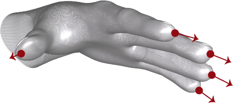
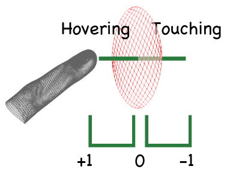

Pointable¶
Attributes:
Constants:
- class Leap.Pointable¶
The Pointable class reports the physical characteristics of a detected finger.
Get Pointable objects from Frame or Hand objects.
#All from frame: frame_pointables = frame.pointables #All from hand: hand_pointables = hand.pointables #Using a known ID: known_pointable = frame.pointable(known_id) #or known_pointable = hand.pointable(known_id)
Note that Pointable objects can be invalid, which means that they do not contain valid tracking data and do not correspond to a physical entity. Invalid Pointable objects can be the result of asking for a Pointable object using an ID from an earlier frame when no Pointable objects with that ID exist in the current frame. A Pointable object created from the Pointable constructor is also invalid. Test for validity with the is_valid property.
New in version 1.0.
- classmethod Pointable()¶
Constructs a Pointable object.
An uninitialized pointable is considered invalid. Get valid Pointable objects from a Frame or a Hand object.
New in version 1.0.
- id¶
Type: integer A unique ID assigned to this Pointable object.
id = pointable.id
The ID value remains the same across consecutive frames while the tracked finger or tool remains visible. If tracking is lost (for example, when a hand and its fingers are withdrawn from the Leap Motion Controller field of view), the Leap Motion software may assign a new ID when it detects the entity in a future frame.
Use the ID value with the Frame.pointable() function to find this Pointable object in future frames.
IDs should be from 1 to 100 (inclusive). If more than 100 objects are tracked IDs of -1 are used until an ID in the defined range is available.
New in version 1.0.
- frame¶
Type: Frame The Frame associated with this Pointable object.
owning_frame = pointable.frame
New in version 1.0.
- tip_position¶
Type: Vector The tip position in millimeters from the Leap Motion origin.
tip = pointable.tip_position
New in version 1.0.
- tip_velocity¶
Type: Vector The rate of change of the tip position in millimeters/second.
speed = pointable.tip_velocity
New in version 1.0.
- direction¶
Type: Vector The direction in which this finger is pointing.
direction = pointable.direction
The direction is expressed as a unit vector pointing in the same direction as the tip.
New in version 1.0.
- width¶
Type: float The estimated width of the finger in millimeters.
width = pointable.width
The reported width is the average width of the visible portion of the finger. If the width isn’t known, then a value of 0 is returned.
New in version 1.0.
- length¶
Type: float The estimated length of the finger in millimeters.
length = pointable.length
The reported length is the visible length of the finger. If the length isn’t known, then a value of 0 is returned.
New in version 1.0.
- is_extended¶
Type: boolean Whether or not the Pointable is more or less straight.
New in version 1.0.
- is_finger¶
Type: boolean Whether or not the Pointable is classified as a finger.
if pointable.is_finger: finger = Leap.Finger(pointable)
New in version 1.0.
- is_tool¶
Type: boolean Notice Tools are deprecated in version 3.0.
Whether or not the Pointable is classified as a tool.
New in version 1.0.
- is_valid¶
Type: boolean Reports whether this is a valid Pointable object.
if pointable.is_valid: print "Valid pointable"
New in version 1.0.
- touch_zone¶
type: integer The current touch zone of this Pointable object.
zone = pointable.touch_zone
The Leap Motion software computes the touch zone based on a floating touch plane that adapts to the user’s finger movement and hand posture. The Leap Motion software interprets purposeful movements toward this plane as potential touch points. When a Pointable moves close to the adaptive touch plane, it enters the “hovering” zone. When a Pointable reaches or passes through the plane, it enters the “touching” zone.
The following example (plug in your Leap Motion Controller) illustrates both the touch_zone and the touch_distance attributes. Touching pointables are colored red, hovering pointables are blue, and those outside either zone are blue.
The defined zones are:
- ZONE_NONE – The Pointable is outside the hovering zone.
- ZONE_HOVERING – The Pointable is close to, but not touching the touch plane.
- ZONE_TOUCHING – The Pointable has penetrated the touch plane.
The touch_distance value provides a normalized indication of the distance to the touch plane when the Pointable is in the hovering or touching zones.
New in version 1.0.
- touch_distance¶
Type: float A value proportional to the distance between this Pointable object and the adaptive touch plane.
The touch distance is a value in the range [-1, 1]. The value 1.0 indicates the Pointable is at the far edge of the hovering zone. The value 0 indicates the Pointable is just entering the touching zone. A value of -1.0 indicates the Pointable is firmly within the touching zone. Values in between are proportional to the distance from the plane. Thus, the touch_distance of 0.5 indicates that the Pointable is halfway into the hovering zone.
distance = pointable.touch_distance
You can use the touch_distance value to modulate visual feedback given to the user as their fingers close in on a touch target, such as a button.
New in version 1.0.
- stabilized_tip_position¶
Type: Vector The stabilized tip position of this Pointable.
stabilized_position = pointable.stabilized_tip_position
Smoothing and stabilization is performed in order to make this value more suitable for interaction with 2D content. The stabilized position lags behind the tip position by a variable amount, depending primarily on the speed of movement.
New in version 1.0.
- time_visible¶
Type: float The duration of time this Pointable has been visible to the Leap Motion Controller.
lifetime = pointable.time_visible
New in version 1.0.
- invalid¶
Type: Pointable Returns an invalid Pointable object.
invalid_pointable = Leap.Pointable.invalid
New in version 1.0.
- ZONE_NONE¶
The Pointable object is too far from the plane to be considered hovering or touching.
New in version 1.0.
- ZONE_HOVERING¶
The Pointable object is close to, but not touching, the plane.
if pointable.touch_zone is Leap.Pointable.ZONE_HOVERING: print "Hovering"
New in version 1.0.
- ZONE_TOUCHING¶
The Pointable has penetrated the plane.
if pointable.touch_zone is Leap.Pointable.ZONE_TOUCHING: print "Touching"
New in version 1.0.
- eq(a, b)¶
Compare Pointable object equality. Two Pointable objects are equal if and only if both Pointable objects represent the exact same physical entities in the same frame and both Pointable objects are valid.
New in version 1.0.
- ne(a, b)¶
Compare Pointable object inequality. Two Pointable objects are equal if and only if both Pointable objects represent the exact same physical entities in the same frame and both Pointable objects are valid.
New in version 1.0.